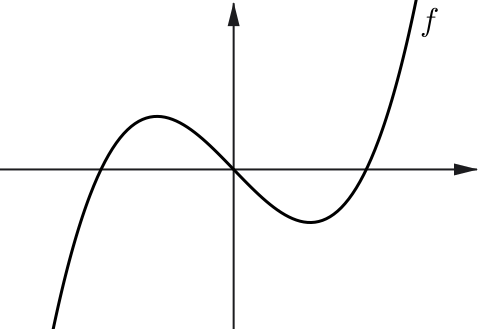
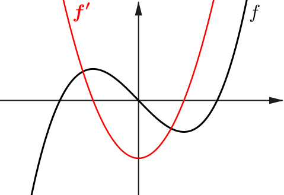
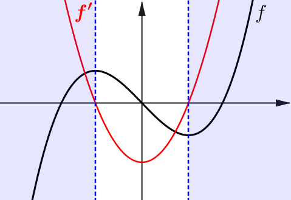
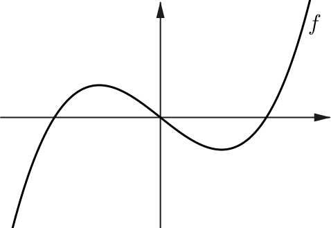
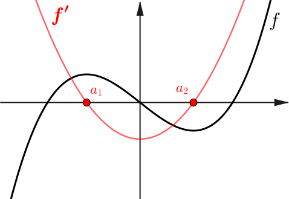
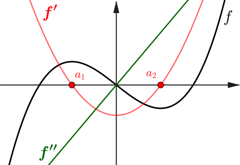
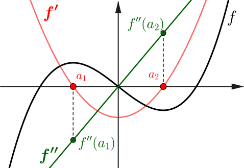
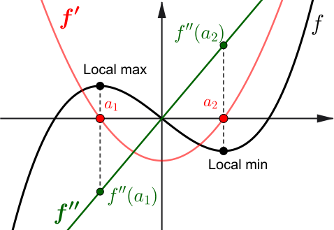

Calculus I
&
Engineering Mathematics 2
Workshop 5
First Derivative Test
| Behaviour of \(f'(x)\) | Conclusion |
| Changes from positive to negative | Local maximum |
| Changes from negative to positive | Local minimum |
| No sign change | Stationary point of inflection |



Second Derivative Test
| Condition at \(x = a\) | Conclusion |
| \( f'(a)=0 \) and \( f''(a) \lt 0 \) | Local maximum |
| \( f'(a)=0 \) and \( f''(a) \gt 0 \) | Local minimum |
| \( f'(a)=0 \) and \( f''(a) = 0 \) | Test inconclusive |





Small change formula
From the definition of derivative $\ds \frac{dy}{dx} = \lim_{\Delta x \to 0}\frac{\Delta y}{\Delta x}.$
If $\,\Delta y \,$ and $\,\Delta x\,$ are small, then
$\ds \frac{\Delta y}{ \Delta x} \approx \frac{dy}{dx}\,$ and so $\,\ds \Delta y \approx \frac{dy}{ dx}\Delta x$
Taylor series
Let $a\in \mathbb R$ and $f(x)$ be and infinitely differentiable function on an interval $I$ containing $a$. Then the one-dimensional Taylor series of $f$ around $a$ is given by
\(\ds f(x)=f(a)+f'(a)(x-a)+\frac{f''(a)}{2!}(x-a)^2+\frac{f^{(3)}(a)}{3!}(x-a)^3+\cdots\)
which can be written in the most compact form:
\(\ds f(x)=\sum_{n=0}^{\infty} \frac{f^{(n)}(a)}{n!}(x-a)^n.\)
Taylor series
\(\ds f(x)=\sum_{n=0}^{\infty} \frac{f^{(n)}(a)}{n!}(x-a)^n.\)
For example, the best linear approximation for $f(x)$ is
$f(x)\approx f(a)+f'(a)(x-a).$
This linear approximation fits $f(x)$ with a line through $x=a$ that matches the slope of $f$ at $a$.
For a better approximation we can add other terms in the expansion. For instance, the best quadratic approximation is
$\ds f(x)\approx f(a)+f'(a)(x-a)+\frac12 f''(a)(x-a)^2.$
Taylor series
Change the function in the input box. Drag slider to increase the number of terms in the Taylor series.
L'Hôpital's rule
If two differentiable functions $f(x)$ and $g(x)$ are defined near (not necessarily at) some point $c,$ with $g'(x)\neq 0,$ and $\ds \lim_{x\to c} f(x) = \lim_{x\to c} g(x) = 0$ or $\pm \infty,$ then
$\ds \lim_{x\to c} \frac{f(x)}{g(x)} = \lim_{x\to c}\frac{f'(x)}{g'(x)}$
provided the latter limit exists.
Second Derivative Test
| Condition at \(x = a\) | Conclusion |
| \( f'(a)=0 \) and \( f''(a) \lt 0 \) | Local maximum |
| \( f'(a)=0 \) and \( f''(a) \gt 0 \) | Local minimum |
| \( f'(a)=0 \) and \( f''(a) = 0 \) | Test inconclusive |
Small change formula: For $\Delta y $ and $\Delta x$ are small, $\ds \frac{\Delta y}{ \Delta x} \approx \frac{dy}{dx}\,$ implies $\,\ds \Delta y \approx \frac{dy}{ dx}\Delta x$
Taylor series: \(\;\ds f(x)=f(a)+f'(a)(x-a)+\frac{f''(a)}{2!}(x-a)^2+\frac{f^{(3)}(a)}{3!}(x-a)^3+\cdots\)
L'Hôpital's Rule: If $f(x)$ and $g(x)$ are defined near (not necessarily at) some point $c,$ and
$\ds \lim_{x\to c} f(x) = \lim_{x\to c} g(x) = 0\,$ or $\,\pm \infty,\,$ then $\,\ds \lim_{x\to c} \frac{f(x)}{g(x)} = \lim_{x\to c}\frac{f'(x)}{g'(x)}$